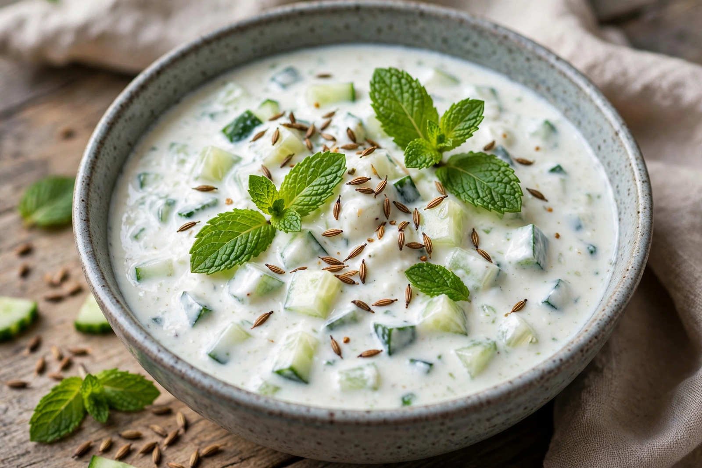

| Course | Condiment, side dish |
|---|---|
| Region | Indian subcontinent |
| Serving temperature | Chilled |
| Main ingredients | Curd (yogurt), cucumber, mint, roasted cumin |
Raita is a side dish in Indian cuisine made of dahi (yogurt, often called curd in Indian English) together with raw or cooked vegetables, fruits or fried dough balls, flavoured with herbs and spices. It is served chilled as a cooling accompaniment to spicy main dishes.
Plain yogurt is whisked smooth and seasoned with salt, roasted ground cumin and sometimes black mustard seeds, curry leaves, green chillies, mint or coriander tempered in oil. The most common additions are cucumber, onion and tomato; other versions use carrot, spinach, pineapple, pomegranate, banana or fried potato. Raita thickened with chickpea-flour dumplings is called boondi raita. A closely related South Indian preparation is pachadi.
Raita accompanies biryani, pulao, kebabs, parathas and everyday rice-and-curry meals. Its cooling effect balances the heat of chillies, and the yogurt aids digestion of rich food. In Western restaurants it is a standard accompaniment to starters such as poppadoms.
The word derives from the Sanskrit rajika or Hindi rāī, referring to black mustard seed, a classic seasoning of the dish.